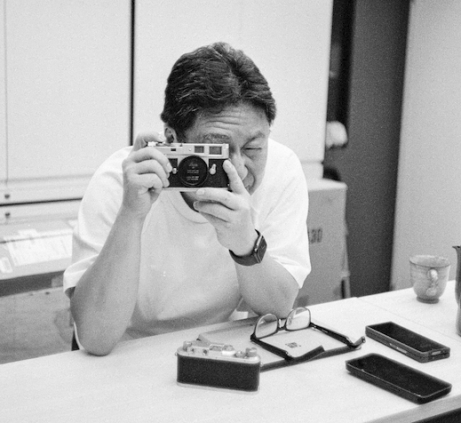

香港的熱氣，姬路的寧靜。 穿梭於兩座城市、兩種視角之間。 1964年生於姬路。1993年起定居香港。
一切的原點，始於1993年我移居香港，以及深水埗電腦商場的那片電子世界。 自從iPhone問世以來，我開始迷上了拍照的樂趣，對數碼產品的熱愛更讓我開始自行製作相機配件。 不知不覺間，手中的器材已從iPhone變成了Leica。
在海外生活多年後，偶爾回鄉，漫步在姬路城周圍，透過外國遊客的目光，我才第一次意識到 這座「因為太近而看不見」的故鄉城堡，是多麼偉大的存在。
「白鷺三十六景」， 是一個擁有「外來者視角」的狂熱愛好者，試圖重新定義姬路城的美麗與故事，並將其傳遞給全世界的嘗試。